컴퓨터활용능력-2급 (2015-10-17 기출문제)
1과목: 컴퓨터 일반
1. 다음 중 멀티미디어에 관한 설명으로 옳지 않은 것은?
- 컴퓨터 및 디지털 기기에서 텍스트나 그래픽은 물론 오디오, 정지영상, 애니메이션, 비디오 등의 정보를 함께 사용할 수 있도록 한다.
- 멀티미디어 정보는 디지털 데이터로 변환하여 처리되며, 그 처리기기들은 단방향성의 특징이 강화되며 발전하고 있다.
- 멀티미디어는 사용자의 선택에 따라 다양한 방향으로 처리되는 비선형 콘텐츠로 발전하고 있다.
- 멀티미디어 데이터의 저장 용량과 전송 속도를 높이기 위해 데이터를 압축하고 복원하는 다양한 기술이 개발되고 있다.
(정답률: 78%)

2. 다음 중 이미지 가장자리의 계단현상을 최소화 해주는 그래픽 기법은?
- 모핑(Morphing)
- 디더링(Dithering)
- 렌더링(Rendering)
- 안티앨리어싱(Anti-Aliasing)
(정답률: 81%)
3. 다음 중 정보의 기밀성을 저해하는 데이터 보안 침해 형태는?
- 가로막기(Interruption)
- 가로채기(Interception)
- 위조(Fabrication)
- 수정(Modification)
(정답률: 83%)
4. 다음 중 인터넷에서의 저작권에 대한 설명으로 옳지 않은 것은?
- 다른 사람의 초상 사진을 사용하기 위해서는 사진작가와 본인의 승낙을 동시에 받아야 하는 것이 원칙이다.
- 사람의 이름이나 단체의 명칭 또는 저작물의 제호 등은 사상 또는 감정의 창작적 표현이라고 볼 수 없기 때문에 저작물이 되지 않는다.
- 국가 또는 지방자치단체의 홈페이지에 게시된 고시·공고·훈령 등은 저작권법의 보호를 받는다.
- 원저작물을 번역, 편곡, 변경, 각색, 영상제작 그 밖의 방법으로 작성한 창작물은 독자적인 저작물로 보호된다.
(정답률: 58%)
5. 다음 중 처리하는 데이터 형태에 따른 컴퓨터의 분류에 해당하지 않는 것은?
- 하이브리드 컴퓨터
- 디지털 컴퓨터
- 슈퍼 컴퓨터
- 아날로그 컴퓨터
(정답률: 62%)
6. 다음 중 인터넷 주소 체계에 대한 설명으로 옳지 않은 것은?
- 인터넷 연결을 위해서는 IP 주소 또는 도메인 네임 중 하나를 배정받아야 하며, 인터넷에 연결된 컴퓨터의 고유 주소는 도메인 네임으로 이는 IP 주소와 동일하다.
- 국제 인터넷 주소 관리기구는 ICANN이며, 한국에서는 한국인터넷진흥원(KISA)에서 관리하고 있다.
- 현재는 인터넷 주소 체계인 IPv4 주소와 IPv6 주소가 함께 사용되고 있으며, IPv6 주소가 점차 확대되고 있다.
- IPv6는 IPv4와의 호환성이 뛰어나고, 128비트의 주소를 사용하여 주소 부족 문제 및 보안문제를 해결할 수 있다.
(정답률: 56%)
7. 다음 중 웹 사이트 접속 시 매번 아이디와 비밀번호를 입력하지 않고도 자동 로그인 할 수 있도록 지원하는 것은?
- 쿠키(Cookie)
- 캐싱(Caching)
- 플러그 인(Plug-In)
- 와이브로(Wibro)
(정답률: 83%)
8. 다음 중 인터넷 환경에서 사용되는 DNS의 역할에 관한 설명으로 옳은 것은?
- 루트 도메인으로 국가를 구별해 준다.
- 최상위 도메인으로 국가 도메인을 관리한다.
- 도메인 네임을 숫자로 된 IP 주소로 바꾸어 준다.
- 현재 설정된 도메인의 하위 도메인을 관리한다.
(정답률: 75%)
9. 다음 중 아래의 (ㄱ), (ㄴ), (ㄷ)에 해당하는 소프트웨어의 종류를 올바르게 짝지어 나열한 것은?
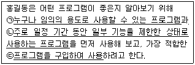
- (ㄱ)-프리웨어, (ㄴ)-셰어웨어, (ㄷ)-상용 소프트웨어
- (ㄱ)-셰어웨어, (ㄴ)-프리웨어, (ㄷ)-상용 소프트웨어
- (ㄱ)-상용 소프트웨어, (ㄴ)-셰어웨어, (ㄷ)-프리웨어
- (ㄱ)-셰어웨어, (ㄴ)-상용 소프트웨어, (ㄷ)-프리웨어
(정답률: 87%)
10. 다음 중 아래에서 응용 소프트웨어만 선택하여 나열한 것은?
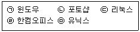
- (ㄱ), (ㄴ)
- (ㄴ), (ㄹ)
- (ㄱ), (ㄷ), (ㅁ)
- (ㄴ), (ㄹ), (ㅁ)
(정답률: 69%)
11. 마이크로 컴퓨터는 휴대성에 따라 여러 가지 종류로 분류 된다. 다음 중 스마트폰을 컴퓨터로 분류하는 경우 스마트폰이 포함될 수 있는 마이크로 컴퓨터의 종류는?
- 팜톱 컴퓨터
- 랩톱 컴퓨터
- 노트북 컴퓨터
- 데스크톱 컴퓨터
(정답률: 65%)
12. 다음 중 아래 그림에서 (ㄱ)과 (ㄴ)에 해당하는 장치를 올바르게 연결한 것은?
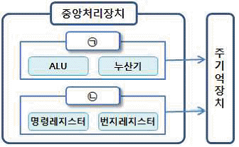
- (ㄱ) - 연산장치, (ㄴ) - 제어장치
- (ㄱ) - 제어장치, (ㄴ) - 연산장치
- (ㄱ) - 연산장치, (ㄴ) - 보조기억장치
- (ㄱ) - 제어장치, (ㄴ) - 캐시기억장치
(정답률: 72%)
13. 다음 중 컴퓨터에서 사용되는 입력장치에 해당되지 않는 것은?
- 키보드(Keyboard)
- 스캐너(Image Scanner)
- 터치 스크린(Touch Screen)
- 펌웨어(Firmware)
(정답률: 79%)
14. 다음 중 프린터 인쇄 시 발생하는 문제에 대한 대처방법으로 적절하지 않은 것은?
- 글자가 이상하게 인쇄되는 경우 프린터 드라이버를 다시 설치한다.
- 인쇄 결과물이 번지거나 얼룩 자국이 발생하는 경우 헤드 및 카트리지를 청소한다.
- 인쇄가 아예 안되는 경우 케이블 연결 상태, 시스템 등록 정보 등을 점검한다.
- 스풀 에러가 발생하는 경우 CMOS Setup을 다시 설정하고 재부팅한다.
(정답률: 68%)
15. 다음 중 FTP 프로그램으로 수행할 수 없는 작업은?
- 원격지에 있는 FTP 서버로 파일 업로드
- 원격지에 있는 FTP 서버에서 파일 다운로드
- 원격지에 있는 FTP 서버의 응용 프로그램 실행
- 원격지에 있는 FTP 서버의 파일 삭제
(정답률: 62%)
16. 다음 중 Windows 7의 돋보기 기능에 대한 설명으로 옳지 않은 것은?(윈도우 7 전용 문제)(윈도우 10에서 일부 메뉴 변경됨)
- [보조프로그램]-[접근성]-[돋보기]를 선택하거나 <윈도우>+<+>키로 실행시킬 수 있다.
- 돋보기 기능 실행 중 <윈도우>+<+>키와 <윈도우>+<->키를 이용하여 화면을 확대/축소할 수 있다.
- [보기] 메뉴의 [도킹 모드]를 실행하면 마우스 포인터 주위의 영역이 확대된다.
- <윈도우>+<ESC>키를 누르면 돋보기 기능이 종료된다.
(정답률: 61%)
17. 다음 중 Windows 7의 제어판에서 사용자 컴퓨터에 설치된 하드웨어 장치를 확인할 수 있는 항목은?(윈도우 10 검증 완료)
- 장치 관리자
- 사용자 프로필
- 하드웨어 프로필
- 컴퓨터 작업그룹
(정답률: 70%)
18. 다음 중 Windows 7에서 하드 디스크에 저장된 파일을 다시 정렬하는 단편화 제거 과정을 통해 디스크의 파일 읽기/쓰기 성능을 향상시키는 프로그램은?(윈도우 10 검증 완료)
- 디스크 검사
- 디스크 정리
- 디스크 포맷
- 디스크 조각 모음
(정답률: 83%)
19. 다음 중 Windows 7에서 [프린터 속성] 대화상자의 [고급] 탭에서 설정할 수 없는 항목은?(윈도우 10 검증 완료)
- 인쇄된 문서 보관
- 기본값으로 인쇄
- 인쇄를 빨리 끝낼 수 있도록 문서 스풀
- 보안을 위한 사용 권한 설정
(정답률: 46%)
20. 다음 중 컴퓨터 구성에 관한 정보가 저장되는 저장소로 시스템 하드웨어와 소프트웨어의 실행 등에 대한 중요한 정보가 포함되어 있는 Windows 데이터베이스를 의미하는 것은?
- CMOS
- Registry
- Hard Disk
- Cache Memory
(정답률: 57%)
2과목: 스프레드시트 일반
21. 다음 중 정렬에 관한 설명으로 옳지 않은 것은?
- 특정 글꼴 색이 적용된 셀을 포함한 행이 위에 표시 되도록 정렬할 수 있다.
- 사용자 지정 목록을 사용하여 사용자가 정의한 순서대로 정렬할 수 있다.
- 최대 64개의 열을 기준으로 정렬할 수 있다.
- 위쪽에서 아래쪽으로 정렬 시 숨겨진 행도 포함하여 정렬할 수 있다.
(정답률: 69%)
22. 다음 중 아래 그림과 같이 연 이율과 월 적금액이 고정되어 있고, 적금기간이 1년, 2년, 3년, 4년, 5년인 경우 각 만기 후의 금액을 확인하기 위한 도구로 적합한 것은?
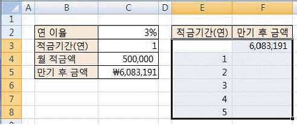
- 고급 필터
- 데이터 통합
- 목표값 찾기
- 데이터 표
(정답률: 63%)
23. 다음 중 데이터 유효성 검사에서 유효성 조건의 제한 대상으로 ‘목록’을 설정하였을 때의 설명으로 옳지 않은 것은?
- 목록의 원본으로 정의된 이름의 범위를 사용하려면 등호(=)와 범위의 이름을 입력한다.
- 유효하지 않은 데이터를 입력할 때 표시할 메시지 창의 내용은 [오류 메시지] 탭에서 설정한다.
- 드롭다운 목록의 너비는 데이터 유효성 설정이 있는 셀의 너비에 의해 결정된다.
- 목록 값을 입력하여 원본을 설정하려면 값을 세미콜론(;)으로 구분하여 입력한다.
(정답률: 61%)
24. 다음 중 [외부 데이터 가져오기] 기능으로 가져올 수 없는 파일 형식은?
- 데이터베이스 파일(*.accdb)
- 한글 파일(*.hwp)
- 텍스트 파일(*.txt)
- 쿼리 파일(*.dqy)
(정답률: 49%)
25. 다음 중 아래 워크시트에서 [A1:C5] 영역에 [A8:C10] 영역을 조건 범위로 설정하여 고급필터를 실행할 경우 필드명을 제외한 결과 행의 개수는?
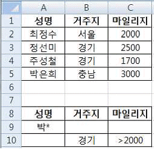
- 1개
- 2개
- 3개
- 4개
(정답률: 72%)
26. 다음 중 메모에 대한 설명으로 옳지 않은 것은?
- 통합 문서에 포함된 메모를 시트에 표시된 대로 인쇄 하거나 시트 끝에 인쇄할 수 있다.
- 메모에는 어떠한 문자나 숫자, 특수 문자도 입력 가능하며, 텍스트 서식도 지정할 수 있다.
- 시트에 삽입된 모든 메모를 표시하려면 [검토] 탭의 [메모] 그룹에서 ‘메모 모두 표시’를 선택한다.
- 셀에 입력된 데이터를 <Delete>키로 삭제한 경우 메모도 함께 삭제된다.
(정답률: 74%)
27. 다음 중 [선택하여 붙여넣기] 대화상자에 대한 설명으로 옳지 않은 것은?
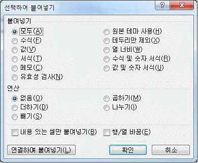
- 복사한 데이터를 여러 가지 옵션을 적용하여 붙여넣는 기능으로, [잘라내기]를 실행한 상태에서는 사용할 수 없다.
- [붙여넣기]의 ‘서식’을 선택한 경우 복사한 셀의 내용과 서식을 함께 붙여 넣는다.
- [내용 있는 셀만 붙여넣기]를 선택하면 복사할 영역에 빈셀이 있는 경우 붙여 넣을 영역의 값을 바꾸지 않는다.
- [행/열 바꿈]을 선택한 경우 복사한 데이터의 열을 행으로, 행을 열로 변경하여 붙여넣기가 실행된다.
(정답률: 42%)
28. 다음 중 아래 워크시트의 [B2:I11] 영역에서 3단, 6단, 9단의 배경색을 변경하기 위한 조건부 서식의 수식으로 옳은 것은?
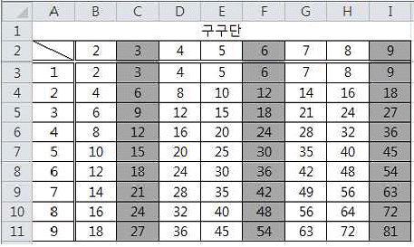
- =MOD($B2,3)=0
- =MOD(B$2,3)=0
- =(B$2/3)=0
- =($B2/3)=0
(정답률: 53%)
29. 다음 중 매크로에 대한 설명으로 옳지 않은 것은?
- 모든 통합 문서에서 매크로를 실행시키고자 할 경우 ‘개인용 매크로 통합 문서’로 저장 위치를 설정한다.
- 매크로 이름에는 공백이 포함될 수 없으며 항상 문자로 시작되어야 한다.
- 매크로는 VBA 언어로 기록되며, 잘못 기록하더라도 Visual Basic 편집기를 사용하여 매크로를 편집할 수 있다.
- 바로 가기 키로 엑셀에서 이미 사용하고 있는 바로 가기 키를 지정할 수 있으나, 바로 가기 키로 매크로를 실행하면 오류 메시지가 표시된다.
(정답률: 63%)
30. 다음 중 아래의 워크시트에서 함수의 사용 결과가 나머지 셋과 다른 것은?
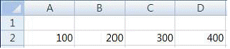
- =LARGE(A2:C2,2)
- =LARGE(A2:D2,2)
- =SMALL($A$2:$C$2,2)
- =SMALL($A$2:$D$2,2)
(정답률: 63%)
31. 다음 중 함수 사용에 대한 설명으로 옳지 않은 것은?
- 함수 마법사는 [수식] 탭의 [함수 라이브러리] 그룹에 있는 [함수 삽입] 명령을 선택하거나 수식 입력줄에 있는 함수 삽입 아이콘( )을 클릭하여 실행한다.
- [수식] 탭의 [함수 라이브러리] 그룹에서 범주를 선택하고 사용하고자 하는 함수를 선택하면 [함수 인수] 대화상자가 표시된다.
- 함수식을 직접 입력할 때에는 입력한 함수명의 처음 몇 개의 문자와 일치하는 함수 목록을 표시하여 선택하게 하는 함수 자동 완성 기능을 이용할 수 있다.
- 중첩함수는 함수를 다른 함수의 인수 중 하나로 사용하며, 최대 3개 수준까지 함수를 중첩할 수 있다.
(정답률: 56%)
32. 다음 중 [페이지 설정]의 머리글/바닥글에 삽입할 수 없는 것은?
- 표
- 그림
- 파일 경로
- 시트 이름
(정답률: 46%)
33. 다음 중 아래의 워크시트에서 수식 ‘=DAVERAGE(A4:E10, “수확량”, A1:C2)’의 결과로 옳은 것은?
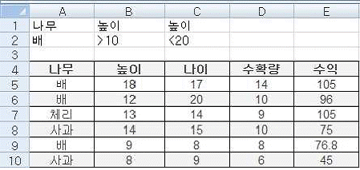
- 15
- 12
- 14
- 18
(정답률: 66%)
34. 다음 중 셀 참조에 관한 설명으로 옳은 것은?
- 수식 작성 중 마우스로 셀을 클릭하면 기본적으로 해당 셀이 절대 참조로 처리된다.
- 수식에 셀 참조를 입력한 후 셀 참조의 이름을 정의한 경우에는 참조 에러가 발생하므로 기존 셀 참조를 정의된 이름으로 수정한다.
- 셀 참조 앞에 워크시트 이름과 마침표(.)를 차례로 넣어서 다른 워크시트에 있는 셀을 참조할 수 있다.
- 셀을 복사하여 붙여 넣은 다음 [붙여넣기 옵션]의 [셀 연결] 명령을 사용하여 셀 참조를 만들 수도 있다.
(정답률: 39%)
35. 다음 중 워크시트에 대한 설명으로 옳지 않은 것은?
- 새 통합 문서에는 [Excel 옵션]에서 설정한 시트 수 만큼 워크시트가 표시되며, 최대 255개까지 워크시트를 추가할 수 있다.
- 워크시트의 이름은 공백 문자를 포함하여 최대 31자까지 사용할 수 있으나 /, \, ?, *, [, ] 등의 기호는 사용할 수 없다.
- 선택한 워크시트를 현재 통합 문서 또는 다른 통합 문서에 복사하거나 이동시킬 수 있다.
- 시트의 삽입 또는 삭제 시 <Ctrl>+<Z>키로 실행 취소 명령을 실행하여 복구할 수 있다.
(정답률: 52%)
36. 다음 중 3차원 차트로 변경이 가능한 차트 유형은?
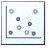
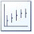
(정답률: 67%)
37. 다음 중 아래의 매크로 대화상자에 대한 설명에서 괄호안에 들어갈 용어로 옳은 것은?
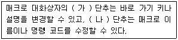
- 가-옵션, 나-편집
- 가-편집, 나-옵션
- 가-매크로, 나-보기 편집
- 가-편집, 나-매크로 보기
(정답률: 73%)
38. 다음 중 아래의 차트에 대한 설명으로 옳지 않은 것은?(문제 오류로 실제 시험장에서는 2번 4번 중복답안 처리 되었습니다. 여기서는 4번을 누르시면 정답 처리 됩니다.)
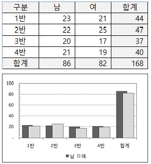
- 차트의 종류는 묶은 세로 막대형으로 계열 옵션의 ‘계열 겹치기’가 적용되었다.
- 각 [축 서식]에는 주 눈금과 보조 눈금이 ‘안쪽’으로 표시되도록 설정되었다.
- 데이터 계열로 “남”과 “여”가 사용되고 있다.
- 데이터 원본으로 표 전체 영역이 사용되고 있다.
(정답률: 77%)
39. 다음 중 차트에 대한 설명으로 옳지 않은 것은?
- 기본적으로 워크시트의 행과 열에서 숨겨진 데이터는 차트에 표시되지 않는다.
- 차트 제목, 가로/세로 축 제목, 범례, 그림 영역 등은 마우스로 드래그하여 이동할 수 있다.
- <Ctrl>키를 누른 상태에서 차트 크기를 조절하면 차트의 크기가 셀에 맞춰 조절된다.
- 사용자가 자주 사용하는 차트 종류를 차트 서식 파일로 저장할 수 있다.
(정답률: 70%)
40. 다음 중 인쇄에 대한 설명으로 옳은 것은?
- 기본적으로 워크시트에서 숨기기를 실행한 영역도 인쇄된다.
- 인쇄 영역에 포함된 도형들을 함께 인쇄하려면 [인쇄] 대화상자에서 ‘개체 인쇄’를 선택하여 인쇄한다.
- 워크시트에 삽입된 차트만 인쇄하려면 차트가 선택된 상태에서 인쇄 명령을 실행한다.
- 여러 시트를 한 번에 인쇄하려면 [인쇄] 대화상자에서 ‘여러 시트’를 선택하여 인쇄한다.
(정답률: 34%)